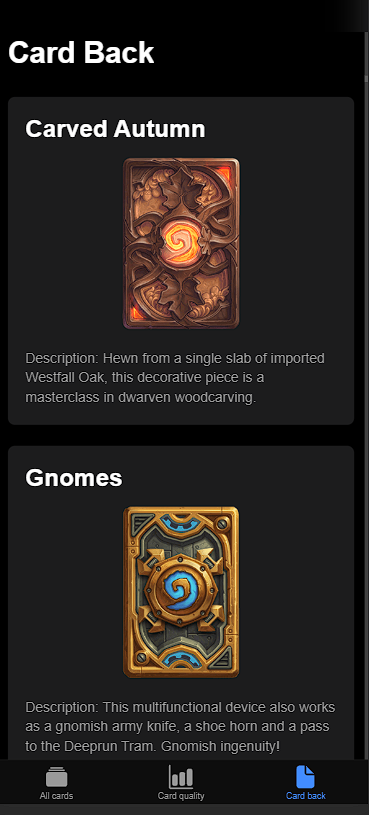

Software & Hardware Developer
Věnuji se vývoji mobilních aplikací, webových řešení a propojování světa hardwaru a softwaru. Rád zkoumám nové technologie, od IoT (ESP32, Matter, KNX) přes moderní architekturu až po databázové systémy.
V rámci diplomové práce vznikla HW/SW brána na procesoru i.MX93, která umožňuje připojení Matter zařízení a následné řízení KNX prvků přes ethernet. Obsahuje integrované webové rozhraní pro snadnou konfiguraci sítě a protokolů.
*Detailní implementace je chráněna NDA.
Kompletní návrh HW i SW pro chytrou bránu. Obsahuje asynchronní webový server (AsyncTCP) běžící na ESP32 (C++). Dále komunikuje s laserovým senzorem překážek přes I2C a pomocí modulu INA219 precizně sleduje odběr motoru pro okamžitou detekci přetížení. Součástí byl i návrh vlastních 3D modelů ozubeného hřebenu.
Vysoce škálovatelný bankovní systém postavený na moderní mikroslužbové architektuře. Frontend využívá Blazor WASM a komunikuje přes centrální API Gateway (C# / .NET 8). Backend zahrnuje přes 8 microservices (Identity, Payments, Cards, Chat) synchronizovaných pomocí Apache Kafka. Databáze je řešena přes PostgreSQL v režimu Primary-Replica a celé řešení je kontejnerizováno v Dockeru.
Týmový projekt z předmětu Vybrané techniky vývoje SW. Komplexní aplikace zaměřená na prodej a správu lístků. Kladen byl extrémní důraz na moderní softwarovou architekturu, čistý kód a efektivní týmovou spolupráci (Git, Code Review).

Akční počítačová hra vyvinutá v herním enginu Unity (C#) pro předmět Vývoj počítačových her. Herní mechanismy jsou inspirované klasikou "Doodle Jump", avšak hra obsahuje vlastní vesmírnou fyziku, animace a originální překážky.
Inovace open-source projektu pro závodní simulátory. Nahrazení pevných gumových bloků pružinovým systémem pro lepší zpětnou vazbu. Kód byl migrován z Arduino Uno na Raspberry Pi Pico (Python/C++) a projekt byl obohacen o desktopové GUI, které umožňuje kalibraci bez nutnosti neustálého flashování firmwaru.